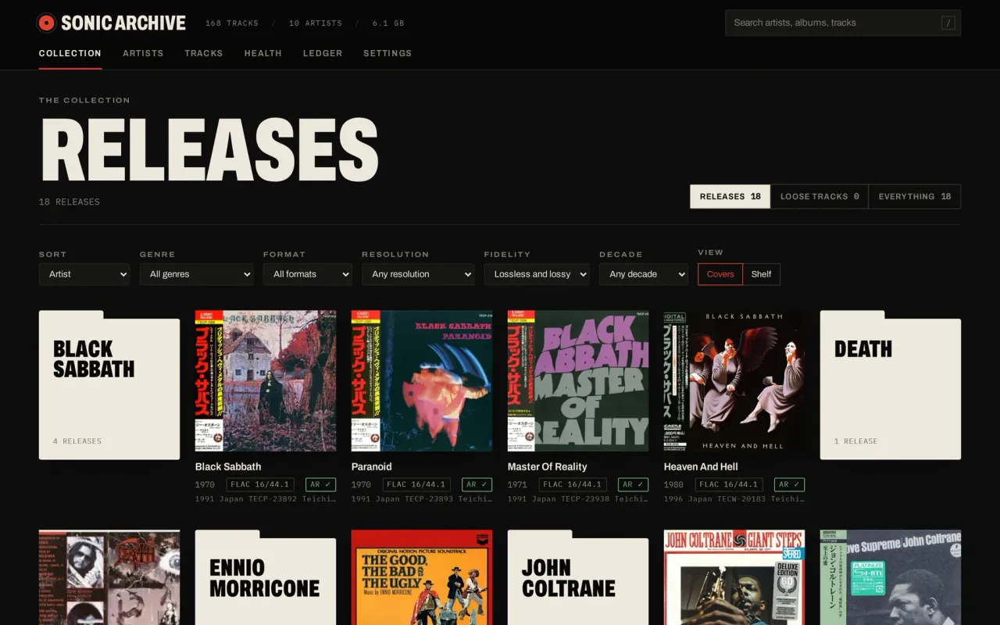
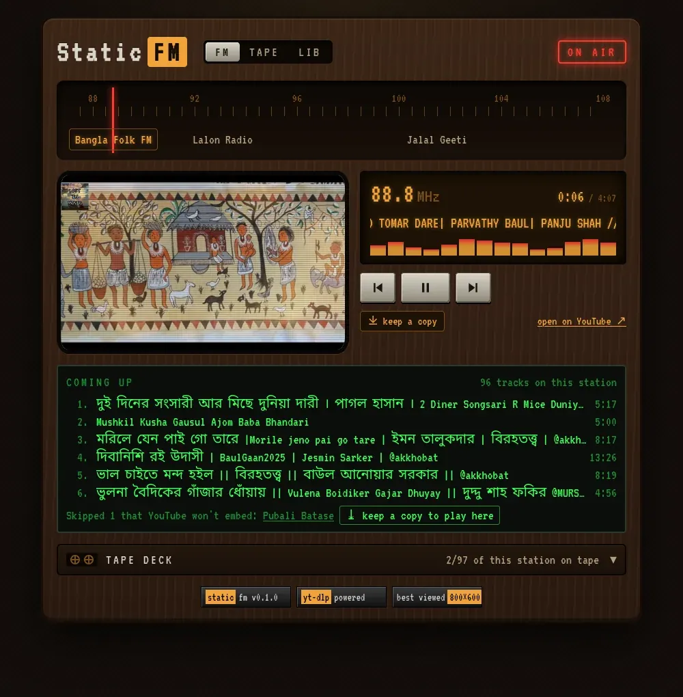

whoami
Sarwar Uddin
CSE student · Linux enthusiast · maker of things
Curious about how things work
I like getting close to the machinery: learning the fundamentals, reading the source, and building things that last.
cat about.md
I'm studying Computer Science at North South University. Most days that means working through code, learning more about Linux and networking, or trying to understand a system below the surface.
I prefer practical work to collecting buzzwords: small experiments, readable code, useful tools, and projects that teach me something real.
- user
- sarwar@dhaka
- role
- CSE student
- school
- North South University
- location
- Dhaka, Bangladesh
- os
- Arch Linux
- shell
- zsh
- focus
- systems · networking · web
- stack
- TypeScript · React · Node · PostgreSQL
ls -l ~/projects
total 5 · things in progress, newest first
-
sonic-archive/
v0.1.0 releasedsoftware · open source
A catalog for a lossless CD collection that never writes to your music. It splits CD images by their CUE sheets, reads EAC and XLD rip logs for AccurateRip results, shows booklet scans and OBI strips, compares pressings side by side, and measures dynamic range. Runs on your own computer.

github.com/sarwar-uddin/sonic-archive -
static-fm/
v0.1.0 releasedsoftware · open source
A web radio for music saved on YouTube, with an early-2000s feel: stations on a tuner dial, static between them, a tape band that saves copies with yt-dlp, and a record crate for the whole library. Runs on your own computer.

github.com/sarwar-uddin/static-fm -
newsroom/
active · privateweb · publishing platform
A Bangla-first, multilingual local news platform designed around real editorial work: authors, revisions, corrections, media, and search, with PostgreSQL as the source of truth.
repository goes public when it's ready
-
workshop/
active · privatesoftware · learning project
An inventory and order management system built while learning TypeScript, React, backend design, PostgreSQL, testing, and deployment.
repository goes public when it's ready
-
plumeria-catalog/
privateweb · independent project
A lean product catalog for plumeria trees and cuttings, focused on clear product information and straightforward browsing.
repository goes public when it's ready
# coming up: systems experiments, networking notes, and other useful rabbit holes.
cat -n offline-hours.txt
not everything happens on-screen
leathercraft
Traditional handwork, vegetable-tanned leather, saddle stitching, and useful objects meant to age well.
cinema
Noir, crime films, patient cinematography, and stories that don't explain everything twice.
music
Heavy, strange, atmospheric, or simply good enough to keep on repeat.
diogenes' lamp
A long-form narrated channel in the making: philosophy, forgotten history, and myth for the hours between waking and sleep. First episode in production.
contact --help
Let's talk shop
Usage: contact [OPTION]
Have a good project or a good question? Pick a channel.
- -e, --email
- sarwaruddin@protonmail.com
- -g, --github
- github.com/sarwar-uddin